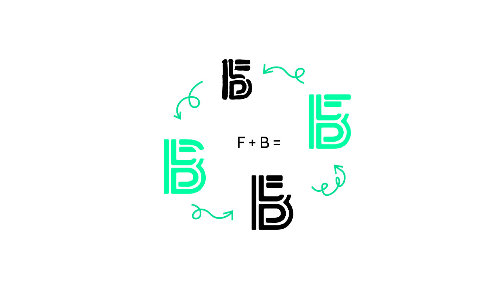
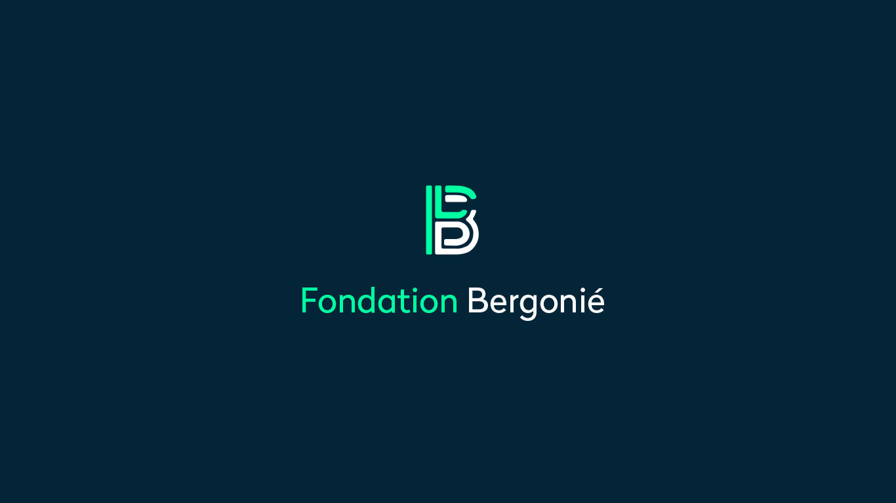

Fondation Bergonié
Identité Visuelle
La Fondation est née pour collecter des fonds afin de financer les recherches contre le cancer. Ce Centre de lutte contre le cancer du Grand SudOuest, dirigé par François-Xavier Mahon, existe depuis 6 ans.
Depuis novembre dernier, Marina Mas est la nouvelle directrice et souhaite offrir une nouvelle identité à la fondation.
Le logotype se construit à partir de la lettre F et B, qui sont les deux lettres fondamentales de la Fondation Bergonié. Les barres permettent de souligner les différents pôles.
Les couleurs rendent l’identité sérieuse et dynamique, qui par ce fluo dénote une touche de fantaisie. Elles mettent en avant le F et le B par les deux couleurs.

